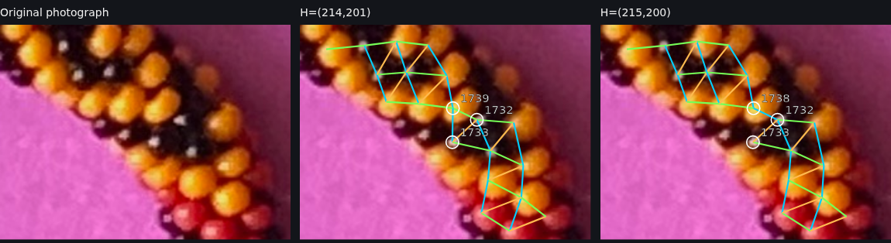

R329: What actually went wrong—or might have gone wrong?
An illustrated guide to the four most important problems. This is a slower explanation of the pictures in R329, using the same original photographic pixels. No code, measurements, or scientific conclusions were changed.
What this guide can and cannot tell you: The orange, cyan, yellow, and green outlines are annotations—not new measurements. A numbered circle identifies the measured bright photographic feature at that location, not necessarily the center of the glass bead. Where two reconstructions differ, the guide explains what each claims; it does not secretly decide that one is correct.
A few ordinary words for the mathematical ideas
A bead index means the position of a glass bead in the original single crochet/bead string, counting along the string. Beads neighboring each other in the finished rope can be far apart in the original string; the candidate index separations include 1, 6, and 7.
A diagonal is a chain of beads touching or neighboring along one of two slanting directions across the crocheted rope. We try to identify two families of these chains. They may appear curved because the bracelet bends.
A lattice is simply a grid-like numbering system that tells us which beads are neighbors, even when the physical rows curve. It does not imply the photographed beads form a perfectly flat grid.
A working reconstruction is the computer's current best full set of choices about these rows. It can be revised. An alternative is another complete set of choices that also makes some sense. We keep both if the photograph has not settled the question.
A bright support means the original pixels belonging to an identifiable red/yellow patch or a bright reflection from a black bead. It is usually not the whole bead. A label such as C-1721-1566 is an observation identifier based on photographic coordinates. It is not the crochet bead index.
The reference bead is the observed yellow patch C-1302-0316 near image position (1302,316). It is assigned string index zero solely so we can compare different solutions with the same numbering.
Winding refers to the total two-coordinate change as the reconstructed bead lattice goes once around the photographed bracelet and returns near the start. For example, H=(214,201) means one family’s lattice coordinate has advanced by 214 units and the other by 201. Depending on which family means +6 or +7 in the original string, this gives two different conditional total bead counts. The return being arithmetically consistent does not prove the rows were traced correctly.
1. A choice at the inward bend changes every later index by one
This is the most useful picture to inspect yourself. The computer can follow the bracelet around the entire photograph in two ways. Both return to the starting bead locations. But in the inward bend, near original image position (1721,1566), they disagree about which diagonal contains a particular bead.
Original photograph with three observed bright-feature positions. 1 = C-1721-1566, 2 = black-bead feature K-1740-1575, 3 = MAT25-K-1719-1592. The colored circles locate observations, not measured glass-bead centers.

The original R329 comparison. Both candidate grids look fairly plausible; the distinguishing fact is the assignment of diagonal direction between the same observed beads.
Follow the sequence of events
Step 1 — Start where both solutions agree. Going forward from the yellow reference bead, both solutions reach black feature 3 with the same family-B relative index, 1733. We are not yet seeing an indexing disagreement. That is our last agreement before the local problem.
Step 2 — Examine the next few beads. Both solutions recognize the photographed red/yellow/black material. They differ in the diagonal relationship through feature 1 and black feature 2. One says they are neighbors in one primitive direction; the other uses the neighboring direction. Because those two directions correspond to different steps along the original string, the index assigned to feature 1 changes.
Step 3 — Observe the first differing index. Under family B, the primary assigns observation 1 index 1739; the nearest alternative assigns it 1738. Their difference is only one bead address. The first observed disagreement is between the previously agreeing index 1733 and the newly different index 1739.
Step 4 — Follow the difference much farther around the bracelet. The reconstructions keep making mutually consistent later decisions, so the one-address difference remains. A distant bead can look incorrectly numbered even when the decision that caused it occurred hundreds of beads earlier.
Step 5 — Test causation rather than merely guessing. Codex replaced only the first different processing window. The original next window would no longer connect. It then replaced a short group of three neighboring windows (124–126), and the rest of the original path connected all the way back to the beginning. This experimentally shows that this small group of decisions explains the persistent later offset.
What we learned: The disagreement comes from a local choice between the two diagonal directions, not from a missing physical bead suddenly appearing near the end of the necklace.
What we do not yet know: Which diagonal choice is physically correct. The current R328 choice predicts the measured positions of three nearby features more closely than the alternative, especially the two black ones, but these predictions are based on related photographic measurements. Your direct inspection of the beads in the first image is unusually valuable.
Read the top graph only for now: It stays at zero while both reconstructions agree. At the dotted vertical line it jumps to +1 for family A or −1 for family B. It then stays flat—not because there is no problem, but because the same indexing difference persists. The second graph repeats the comparison using different traversal conventions; the bottom graph belongs to Problem 3.
2. The 3D bead-position model first disagrees near index 31
This is a different kind of problem. In Problem 1 we compared two ways of assigning photographic bead indices. Here, we keep a photographed row/index hypothesis fixed and ask whether an independently constructed three-dimensional physical model puts the corresponding glass beads over the correct photograph pixels.
Original upper bracelet crop. Green 0 is the arbitrary yellow reference. Cyan 26 marks the last local observed support whose assigned physical-model owner agreed. Amber 31 marks the first observed disagreement for the frozen N=3000 model. The circles locate measured photo supports, not bead centers.
What does “owner” mean?
Imagine that the program renders an invisible label on every modeled glass bead. It then looks through the virtual camera at every pixel in a measured photographic patch and asks: Which modeled glass bead would appear at this pixel? That modeled bead is the pixel's owner. If most of the patch belongs to the expected bead, this is good correspondence. If the patch belongs to a different modeled bead, something disagrees.
Step 1 — Index 26 agrees. The photographed feature near (1390,312) is assigned a physical-model address that owns about 92.86% of its original support pixels. This is a strong local match under the model's own projection.
Step 2 — Index 31 does not. The feature is a black reflection region near (1401,248). The photographic index map expects model bead address −33. The virtual camera instead says −27 owns all of that patch. That is a difference of six addresses—exactly one of the crochet neighbor step sizes.
Step 3 — A tempting explanation. Perhaps the photograph was assigned to the wrong +6 diagonal. If so, would shifting this bead and every subsequent correspondence by six solve the physical model disagreement?
Step 4 — Actually test the shift. The six-address shift makes correspondence better over the next 200 index units: average observed-pixel ownership rises from 2.63% to 28.85%. But three photographic neighbor links cease to agree. Over the whole remaining circuit, ownership is still very poor. So a simple one-time index shift helps locally but is not the complete explanation.
Step 5 — Test geometry separately. Codex varied the physical model's starting phase and longitudinal placement by modest amounts without changing the photographic indices. Some local supports improved, but the subsequent divergence remained. Uniformly spacing all beads made glass beads interpenetrate in a tested physical construction, so it was not accepted as a valid fix.
Crucial caution: These are model versus photographed assignment disagreements, not proof that either the photograph-derived indexing or the 3D formula is wrong. The N=3000 physical model also has a different total count than the primary photographic winding. This is a diagnostic extrapolation, not a fully compatible reconstruction.
Four diagnostic plots. In the upper plot, look for the **first small step away from zero**, not the very large mismatch far to the right. The next plot shows a growing position mismatch measured in pixels. The lower plots track the visible-region and reflection errors separately; they should not be combined casually because they measure different things.
The other frozen model, N=2800, first differs earlier—between indices 14 and 20—but its mismatch is one physical index rather than six. Trying to propagate that one-index correction makes the next 200-index region much worse. This suggests we may have different failure mechanisms in the two physical models.
3. A much larger wrong total can begin with a small early choice
This example is useful because it answers your request to trace an error backward. A lower-ranked reconstruction completes the geographical circuit and returns successfully, yet produces a radically different total winding.
Original photo near the upper/right section. Green circle: the last feature with an agreeing family-B assignment, approximately index 92. Amber circle: black feature NEW-1621-315, the first observed different assignment near index 97. Both marks are measured bright supports, not bead centers.
Step 1 — Up to index 92, the two reconstructions agree. We have a shared local history and the same relative numbering.
Step 2 — Near index 97, the alternative changes one row. That first observed difference corresponds to −7 in family B. A single seven-address difference is still small compared with the thousands of beads around the bracelet.
Step 3 — The alternative keeps choosing different rows over several neighboring processing windows. These row-sized differences accumulate through windows 10–34. By the time that region ends, the alternative's indexing is off by 175 addresses in family B compared with the primary reconstruction.
Step 4 — The program then preserves the accumulated offset while continuing all the way around the bracelet. This is how a completed, connected, apparently consistent reconstruction can still produce a seriously wrong total bead count.
Step 5 — Codex tested the proposed cause. Changing only the first window fails to attach the next part of the bracelet. Replacing the entire affected group of windows makes the rest of the primary growth history attach successfully. This demonstrates the cumulative row-choice mechanism of the later difference.
Why not adopt this alternative? It has worse shared-bead-shape penalties, and its tested count-specific physical models explain only around 2.6–3% of the original photographic support. Those tests weaken the alternative, but cannot prove that every underlying early row choice was wrong.
Its winding is H=(214,176), giving conditional counts 2,554 or 2,516 rather than 2,704 or 2,691. The important insight is that even a difference of around 175 in the final count may have an identifiable early beginning.
4. The lower bend: another small, local row ambiguity
There is also a lower-bend alternative, H=(213,201). Its first family-B index difference appears between relative indices 1187 and 1188. This is distinct from the inward-bend choice above.
Original lower-bend crop. Green circle: E5-1151-2893, last agreeing family-B observation around index 1187. Amber circle: NEW-1132-2925, first different assignment around 1188. The computer's precise marker positions may be displaced within a glass bead.
Step 1 — The two histories enter the lower bend agreeing. Both can explain much of the visible red/yellow/black pattern.
Step 2 — One local direction assignment differs. That alters the index of the next photographed feature by one primitive lattice step. From then on, all later assigned indices reflect the changed history.
Step 3 — Replacing windows 79–82 makes the alternative reach the return. So the computer has localized the responsible segment. It has not thereby shown which set of photographed diagonals is correct.
What would help is to enlarge this photo enough to inspect the black beads and colored rows immediately surrounding the two marked observations, then compare each proposed diagonal against several neighboring beads. Do not judge by the shortest line between two reflections alone.
What I would inspect and what Codex should explain better
Question
Most useful next evidence
Which inward-bend winding is correct?
Show both candidate diagonals passing through the three marked features, enlarged 4–8× with several neighboring rows. Explain which real beads each line passes through.
Why does the physical model disagree at index 31?
Show the photographed black support, the model's predicted bead −33, and the bead −27 that actually owns the support. Use distinct outline colors on the same original photograph, then move forward 10, 30 and 100 addresses.
Could a wrong total begin early?
Show the sequence of changed diagonals over windows 10–34. Present a short animation or numbered photo panels showing how the first −7 becomes −175.
Are the lower-bend rows obvious?
Show both proposed local bead-to-bead routes, colored differently, along with the nearest black beads and the original pixel crop.
The one thing we should not overlook: R329 made genuine progress by identifying where alternative explanations begin and by testing the effect of changing earlier decisions. What remains unresolved is photographic truth: which local diagonal sequence actually follows the glass beads. Better pictures and explanations can help you judge that without requiring you to learn the project's internal programming terminology.
Created as an explanatory companion. Annotated circles use recorded image coordinates and are not additional manual labels, updated scientific evidence or reclassified bead centers. All linked photographs and measurements are unchanged.